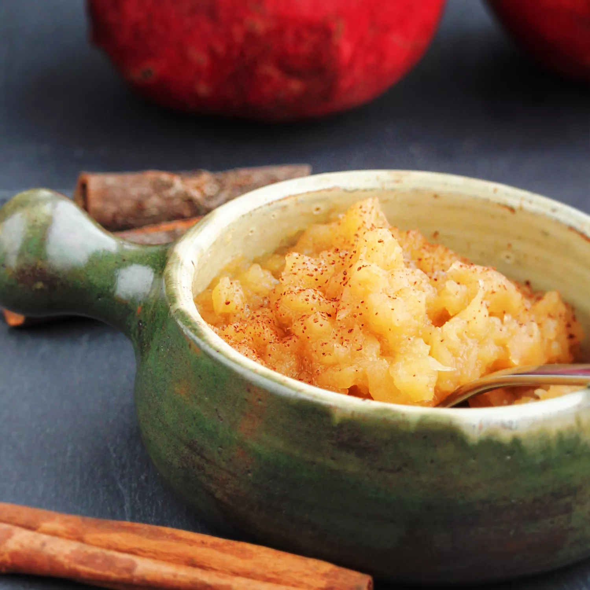

Apple Sauce

Description
A simple applesauce using brown sugar and apple cider.
Ingredients
- 12 medium apples - peeled, cored and chopped
- ⅓ cup light brown sugar
- 1 ½ teaspoons ground cinnamon
- 1 ½ teaspoons lemon juice
- 1 cup apple cider
- 1 pinch salt, or to taste
Steps
- Mix apples, brown sugar, cinnamon, lemon juice, apple cider, and salt together in a large pot over medium-high heat. Bring to a boil, then reduce heat to low and simmer for until apples are soft, about 20 minutes. Use a potato masher while cooking to help break down the apples. Serve warm or cool.